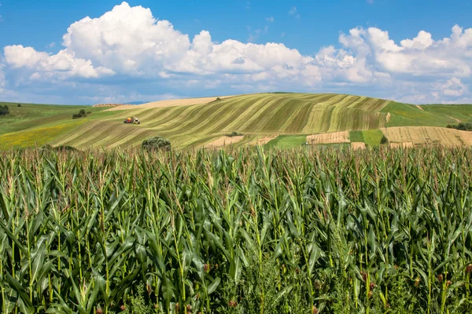

Agricultura Brasileira
A agricultura brasileira é uma das atividades econômicas mais importantes do país.
Representa um quarto do PIB nacional e tem apresentado crescimento expressivo.
Desenvolve-se sob uma estrutura fundiária concentrada e desigual.
É praticada por meio de diferentes modalidades: tradicional, moderna, familiar, patronal e orgânica.
A modernização da agricultura brasileira, na segunda metade do século XX, resultou na mecanização do campo, no aumento da produtividade e no crescimento da produção de commodities agrícolas.
A modernização marcou o avanço da fronteira agrícola e o surgimento de novas regiões produtoras, como o Matopiba.
Tipos de agricultura no Brasil
-
Agricultura Moderna:
Praticada mediante o uso intensivo de maquinários e tecnologia moderna em todas as etapas do processo produtivo, desde a seleção de sementes até a colheita. Surgiu com a Revolução Verde (conjunto de inovações tecnológicas no campo da agricultura), e, no Brasil, ganhou espaço no meio rural a partir das décadas de 1970 e 1980.
-
Agricultura Tradicional:
Praticada sem o uso intensivo de tecnologias modernas ou maquinários, utilizando métodos tradicionais de plantio e colheita. Essa é a modalidade mais antiga de agricultura, praticada em pequenas propriedades, com grande diversidade de cultivos.
-
Agricultura Familiar:
É a principal modalidade de agricultura praticada no Brasil. Caracterizada pelo emprego de mão de obra de pessoas de uma mesma família, além da gestão da propriedade ser feita por esse núcleo familiar. Segundo o IBGE, 73% do pessoal ocupado no campo brasileiro têm algum laço de parentesco com o proprietário de terras e produtor rural. É praticada em pequenas propriedades, com grande diversidade de cultivos.